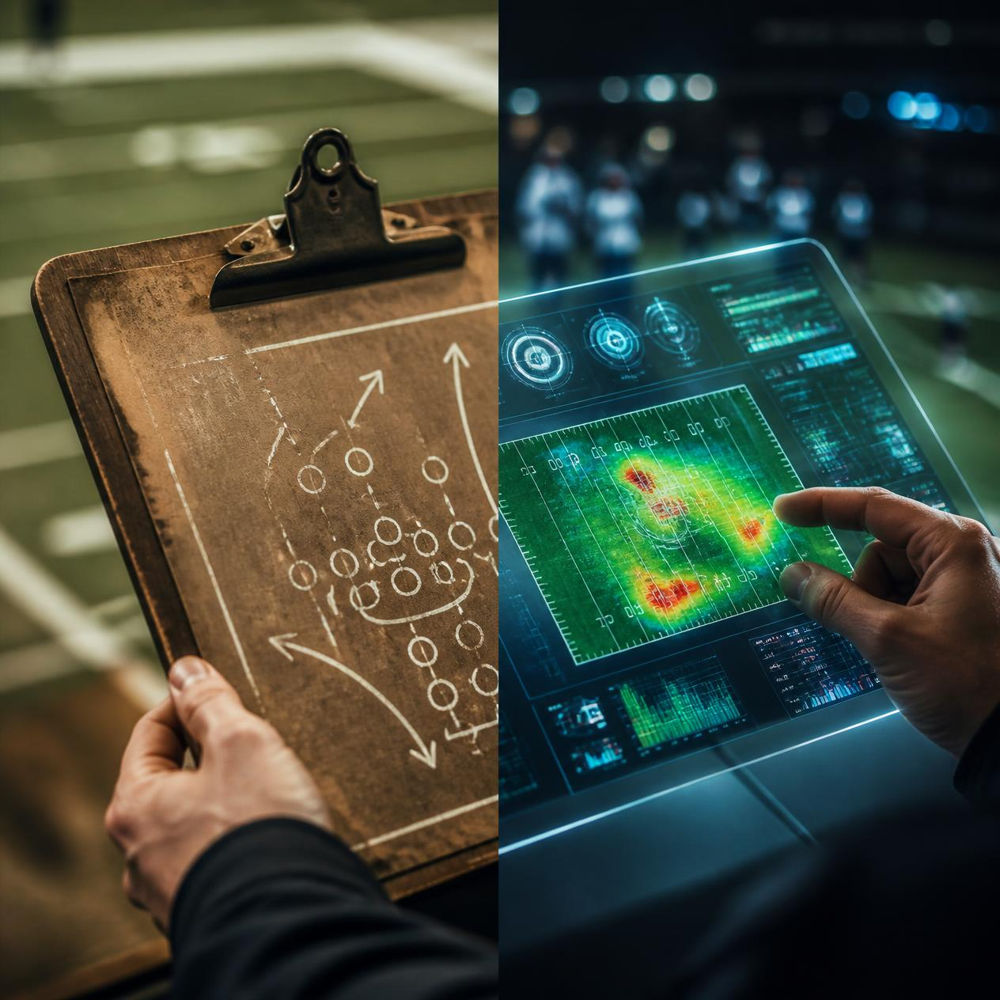
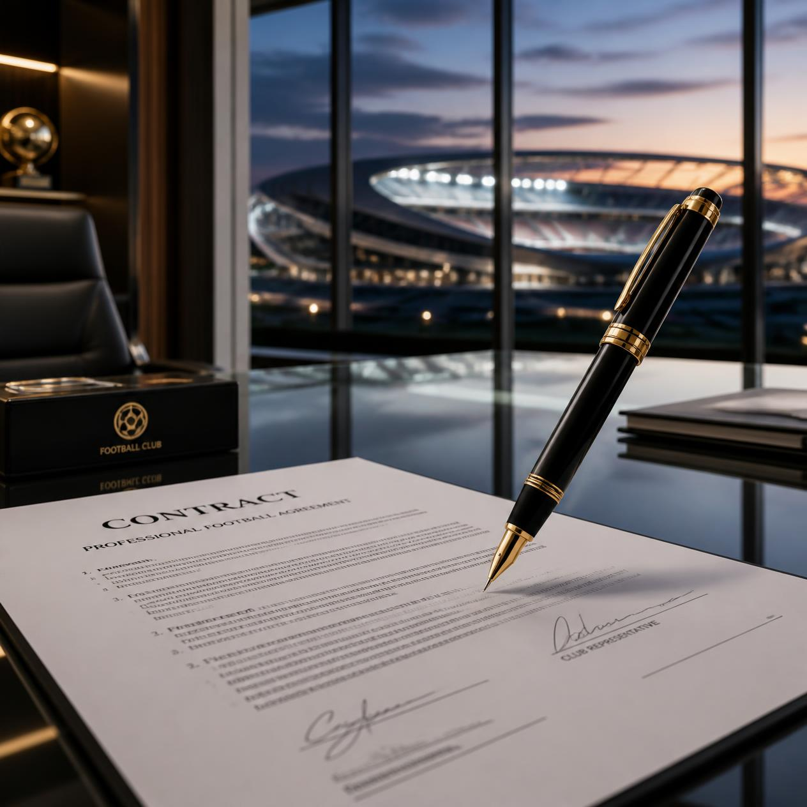
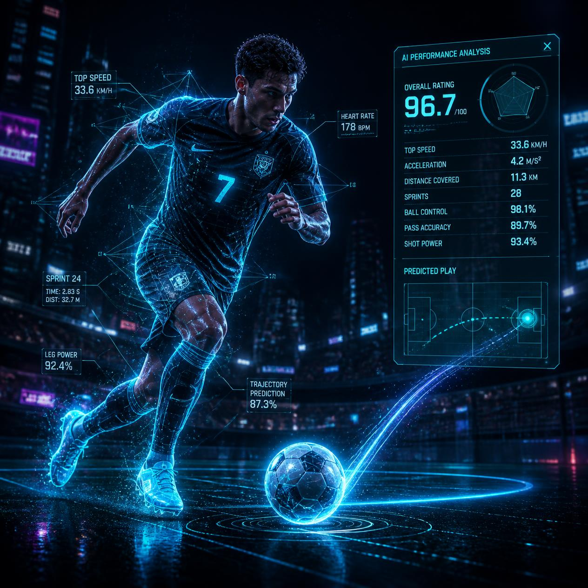
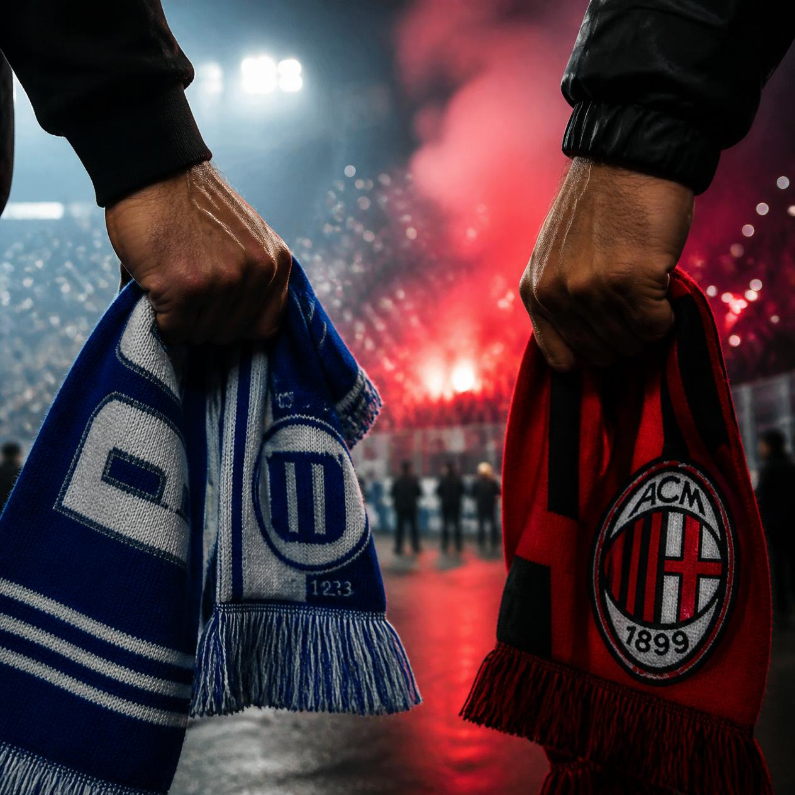

1. A Evolução Tática no Futebol
O futebol moderno é muito diferente daquele praticado há poucas décadas. Se no passado a habilidade individual era o único fator determinante para a vitória, hoje a organização tática e a ocupação dos espaços no campo são fundamentais. Os sistemas de jogo evoluíram dos clássicos 4-3-3 e 4-4-2 para esquemas mais dinâmicos, onde a movimentação constante exige que atacantes ajudem na marcação e defensores participem da criação de jogadas.
Além disso, a análise de dados se tornou uma ferramenta indispensável. Comissões técnicas utilizam estatísticas em tempo real para entender o comportamento do adversário e ajustar a postura do time durante a partida. O futebol atual exige dos atletas não apenas excelente preparo físico, mas também alta inteligência tática.

2. Bastidores e Mercado de Transferências
O mercado de transferências é uma das engrenagens mais complexas e movimentadas do esporte mundial. Longe dos gramados, a montagem do elenco envolve negociações intensas entre clubes, atletas e seus representantes durante as chamadas "janelas de transferência".
As transações dependem do pagamento da multa rescisória, contratos de patrocínio, direitos de imagem e o cumprimento das regras de Fair Play Financeiro. Entender os bastidores das contratações ajuda a compreender como a gestão de um clube impacta diretamente no seu desempenho em campo e na sua saúde financeira a longo prazo.

3. Tecnologia em Campo: Do VAR à Inteligência Artificial
A tecnologia transformou definitivamente o modo como o futebol é jogado, arbitrado e analisado. A introdução do VAR (Árbitro Assistente de Vídeo) e do impedimento semi-automatizado busca reduzir erros humanos em lances decisivos, tornando as decisões mais precisas.
Fora da arbitragem, dispositivos como coletes com GPS, sensores de impacto e softwares de Inteligência Artificial monitoram o desgaste físico dos atletas em tempo real. Essas ferramentas ajudam na prevenção de lesões e permitem que os preparadores físicos personalizem os treinos de acordo com as necessidades de cada jogador.

4. Grandes Rivalidades Históricas
Os maiores clássicos do futebol ultrapassam a disputa pelos três pontos na tabela: eles carregam décadas de história, cultura e paixão. A rivalidade entre grandes equipes muitas vezes reflete divisões geográficas, sociais ou históricas dentro de uma mesma cidade ou país.
Partidas entre arquirrivais movimentam multidões, geram debates intensos e criam heróis improváveis. Essa rivalidade saudável é um dos principais combustíveis que mantêm a tradição do futebol viva e envolvem gerações de torcedores ao longo do tempo.

5. Projetos Sociais e o Futebol como Inclusão
O futebol possui um poder de mobilização que vai muito além das grandes arenas profissionais. Em diversas comunidades ao redor do mundo, o esporte funciona como uma ferramenta de transformação e inclusão social.
Escolinhas e projetos sociais utilizam a prática esportiva para promover valores como disciplina, trabalho em equipe e respeito ao próximo, além de manter jovens integrados à escola. Mais do que revelar novos talentos, essas iniciativas têm como objetivo principal formar cidadãos e oferecer oportunidades em áreas com pouca infraestrutura.